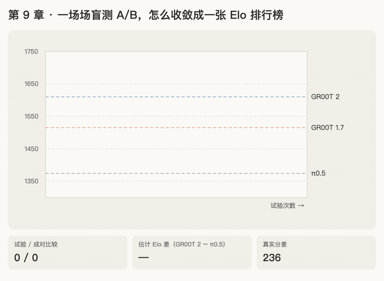

第 9 章 · 评测：盲测 A/B、Bradley-Terry Elo 和会说真话的仿真
本章回答：真机成功率每天都在漂，几个月的评测怎么还能互相比较？"GR00T 2 比 π0.5 强 236 Elo"是怎么算出来的、有多可信？仿真能不能代替一部分真机评测？
讲解日期：2026-11-15 · 上一章：第 8 章 人形全身 · 下一章：第 10 章 部署
对应原文：materials/text/gr00t2-whitepaper.txt§4.3 L1030–L1096；附录 D.4 L4071–L4170（式 4–8，Tab. 13 L4155）、D.7 L4354 起；§4.5.2 L1359–L1381；§5 Evaluation L1677–L1700
本章缩写：A/B = A/B test（两组对照测试）；Elo = 以发明者 Arpad Elo 命名的等级分；CI = Confidence Interval（置信 / 区间）；MMRV = Mean Maximum Rank Violation（平均 / 最大 / 排名 / 违背）；MM = Minorization-Maximization（下界构造 / 最大化）算法。全部缩写见 附录 · 缩写与术语表
讲解
第一步：为什么不报绝对成功率，而做盲测 A/B（2026-11-15）
类比：比两个跑步选手，让他们同一天、同一条跑道、同一阵风里并排跑。 今天风大，两人都慢，但谁快谁慢还是看得出来；如果一个周一跑、一个周五跑，风速差异会盖过实力差异。
问题（L1033–L1036）：绝对成功率随工位、操作员、硬件、日期漂移，一场的分数不能和另一场比。
做法（L1072–L1076）：一次 A/B 试验把 2–4 个 checkpoint 按随机顺序、在同一场景、由同一操作员、几分钟内跑完；漂移是共享的，在比较里抵消。操作员不知道在跑哪个模型（盲测）。
GearArena 规模（截至 2026-11-06 快照）：195 场 campaign、16,044 条打分 episode、11,767 对比较、10 个 YAM 工位、20+ 操作员、71 个 checkpoint，时间跨度 2026 年 7–11 月。
任务从第一性原理设计（L1077–L1081）：先问"机器人应该会什么"，再挑能暴露这些能力的任务，最后在真 checkpoint 上试——人人都做到的任务归档，没人做到的搁置（两者都区分不了任何东西）。当前 YAM V2 套件：38 个语言跟随和动作基元任务，带部分分量规。
一句话：漂移会淹没差异，所以只做"同场同人同几分钟"的盲测对比，再把所有对比累积成一张排行榜。
第二步：从一场场对比到一个 Elo 分（2026-11-15）
类比：下棋排名。 不需要每两个人都下过，只要所有人通过对局连成一张网，就能给每个人一个分数，分差直接对应"预期胜率"。
公式（附录 D.4）。
Bradley-Terry 模型（式 4，L4080）：每个 checkpoint 一个强度 \(p_i>0\)，
用 MM 迭代做最大似然（式 5，L4095）：\(p_i\leftarrow\dfrac{W_i}{\sum_{j\ne i}n_{ij}/(p_i+p_j)}\)，\(W_i\) 是加权胜场（平局算半场），\(n_{ij}\) 是 \(i\)、\(j\) 之间的总权重。每个 checkpoint 还和一个固定锚点打一场"虚拟平局"，防止全胜/全败跑到无穷大。
换算到 Elo（式 6，L4105）：\(\text{Elo}_i=1500+400\log_{10}\dfrac{p_i}{\bar p}\)，\(\bar p\) 是所有强度的几何平均。由此得到
| 符号 | 读法 | 意思 |
|---|---|---|
| \(p_i\) | "p i" | 第 \(i\) 个 checkpoint 的强度 |
| \(W_i\) | "W i" | 它的加权胜场数 |
| \(n_{ij}\) | "n i j" | \(i\) 与 \(j\) 之间比较的总权重 |
| \(\bar p\) | "p bar" | 全体强度的几何平均，对应 Elo 1500 |
细节规则： - 一次 \(n\) 个 checkpoint 的试验产生 \(\binom n2\) 场比较；打分相同算平局；两个都 0 分的比较丢掉（只说明任务太难，不能排序）。 - 任务归一化（式 7，L4114）：同一对 checkpoint 在同一任务上的所有比较总权重归一为 1——每个任务只算一次，常测的任务不会主导。 - 按任务做 bootstrap（L4122–L4135）：同一任务的多次试验摆的是同一场景，不独立；所以重采样任务而不是试验，500 次，每次重算权重和拟合。若只在重采样前算一次权重，区间会窄约 30%（假精确）。 - 配对比较（式 8，L4136）：\(P(A>B)=\frac1B\sum_b\mathbb 1[\text{Elo}_A^{(b)}>\text{Elo}_B^{(b)}]\)——两个区间重叠不代表分不开，因为抽到的任务好坏会同时抬高两者，差值里会抵消。
例子：把分差换成胜率。
| 分差 | 计算 | 预期胜率 | 来源 |
|---|---|---|---|
| 100 | \(1/(1+10^{-0.25})=1/1.562\) | 64% | 原文定义（L4107） |
| 95（GR00T 2 vs GR00T 1.7） | \(1/(1+10^{-0.2375})=1/1.579\) | 63% | Tab. 13 |
| 236（GR00T 2 vs π0.5） | \(1/(1+10^{-0.59})=1/1.257\) | 80% | Tab. 13 |
Tab. 13 的区间：vs π0.5 为 +236 [+171, +325]，vs GR00T 1.7 为 +95 [+50, +148]，两者 \(P(A>B)>0.99\)；vs Turbo（★ 参考 checkpoint）为 −14 [−58, +28]，\(P=0.28\)——分不开。
一句话：Bradley-Terry 把所有对比拟合成强度，换算成 Elo；按任务做 bootstrap 才是诚实的不确定性。
第三步：仿真当"代理评测"有多准（2026-11-15）
类比：模拟考和高考的相关性。 如果模拟考排名和高考排名高度一致，平时就可以用模拟考筛人，只让最后几名候选去"高考"。
做法（§4.5.1–4.5.2）：用 agent 辅助流程（SimFoundry 工具 + 真机视频、3D 扫描、照片）把真实任务重建到 Isaac Lab Arena / Newton / MuJoCo Warp 里；用真机数据训的策略直接在仿真里测，不在仿真数据上微调。
例子：一致性（25 个 YAM 任务，14 个 checkpoint，真机每任务 5 次盲测 A/B、仿真 10 次）：
| 指标 | Pearson \(r\) | Spearman \(\rho\) | MMRV |
|---|---|---|---|
| 任务进度 | 0.93 | 0.84 | 0.059 |
| 成功率 | 0.92 | 0.89 | 0.055 |
| Bradley-Terry Elo | 0.93 | 0.90 | — |
作者说这些值达到"同样试验次数下完美仿真器能达到的相关性"的 95–99%（L1370）。DROID 场景重建的 5 个 checkpoint 更高：0.98 / 0.95 / 0.97。
用法：预训练中用仿真跟踪中间 checkpoint，把最终候选缩到 3 个再上真机；数据管线改动（序列打包、混合分片采样）先在小规模训练 + 闭环仿真里验证；推理设置也先在仿真里筛（L1373–L1380）。
统计学的硬限制（§5，L1679–L1681）：20 次试验分得清 GR00T 2 和基线的大差距，但部署关心的是小差距——分辨 95% vs 99% 每个策略约需 285 次，99% vs 99.9% 要 1,000 次以上（双侧两比例 z 检验，α = 0.05，功效 80%）。而且 30–35% 的比较是平局（D.7）。
一句话：校准过的仿真和真机 Elo 相关 0.93，可以当日常筛选器；但"99% 级可靠性"靠现有试验量根本测不出来。
动画演示：一场场盲测 A/B，怎么收敛成一张 Elo 排行榜

可交互版：animations/09-elo-arena.html（▶ 播放、→ 单步、↺ 从头开始；"换一批随机结果"按钮）
怎么看： 1. 真实分差按 Tab. 13 设定（π0.5 → GR00T 1.7 +141 → GR00T 2 +95），每步一次三方同场试验（第一步）。 2. 每步后用式 (5) 的 MM 迭代重拟合，三条线逐渐靠近各自的虚线（第二步）。 3. 按"换一批随机结果"多跑几次，体会少量比较时估计有多不稳——这是第二步要按任务做 bootstrap 的原因。
练习与作答记录
题 1（第二步 胜率换算）：GR00T 2 Turbo 比 GR00T 1.7 高 109 Elo（Tab. 13），预期胜率是多少？
作答：（待作答）
题 2（第二步 bootstrap）：为什么按任务重采样比按试验重采样得到的区间更宽？用"同一任务 5 次试验摆同一个场景"解释。
作答：（待作答）
题 3（第三步 样本量）：一个策略真实成功率 70%，只跑 20 次，用 \(\sqrt{p(1-p)/n}\) 算 SEM。它和一个真实 80% 的策略能靠 20 次分开吗？
作答：（待作答）
口诀
同场同人几分钟，漂移相消才算公；
强度拟合换 Elo，四百为底十为幂；
抽样要抽任务头，仿真零点九三准，九九可靠测不够。
本章复习卡片
G19、G20、G21（练习做完后，按答错、卡住的地方再补。）
附录 · 延伸阅读
推荐阅读
| 读什么 | 读哪里 | 读它为了什么 |
|---|---|---|
| ★ GR00T 2 白皮书 | 附录 D L3896–L4436 | GearArena 全部方法论 |
| ★ GR00T 2 白皮书 | §4.5.2 L1359–L1381、附录 J.2 | 仿真代理评测 |
| GR00T 2 白皮书 | §5 Evaluation L1677–L1700 | 统计学限制与开放方向 |
| Bradley & Terry (1952)、Hunter (2004) MM 算法 | 原论文 | 模型与拟合 |
| Davison & Hinkley (1997) | cluster bootstrap 章节 | 集群重采样 |
数学原理
- Bradley-Terry：成对比较的 logistic 模型，\(\log(p_i/p_j)\) 是对数胜率比。
- MM 算法：每步构造似然的下界并最大化，单调收敛。
- Cluster bootstrap：样本有组内相关时按组重采样，保留组内相关结构。
- 两比例 z 检验的样本量：\(n\approx\frac{(z_{1-\alpha/2}\sqrt{2\bar p\bar q}+z_{1-\beta}\sqrt{p_1q_1+p_2q_2})^2}{(p_1-p_2)^2}\)。
公式清单
| 公式 | 出处 |
|---|---|
| \(P(i\text{ 胜 }j)=p_i/(p_i+p_j)\) | 式 (4) |
| \(p_i\leftarrow W_i/\sum_{j\ne i}\frac{n_{ij}}{p_i+p_j}\) | 式 (5) |
| \(\text{Elo}_i=1500+400\log_{10}(p_i/\bar p)\) | 式 (6) |
| \(w_m=1/\lvert\{m':\text{同一对、同一任务}\}\rvert\) | 式 (7) |
| \(P(A>B)=\frac1B\sum_b\mathbb 1[\text{Elo}_A^{(b)}>\text{Elo}_B^{(b)}]\) | 式 (8) |
| \(P=1/(1+10^{-\Delta/400})\) | Elo 分差 → 预期胜率 |
代码对照
本章暂无代码对照：G2-M4（Bradley-Terry + 按任务 bootstrap 脚本）完成后补 ch09_evaluation.py，核对"100 Elo = 64%、236 Elo ≈ 80%"。